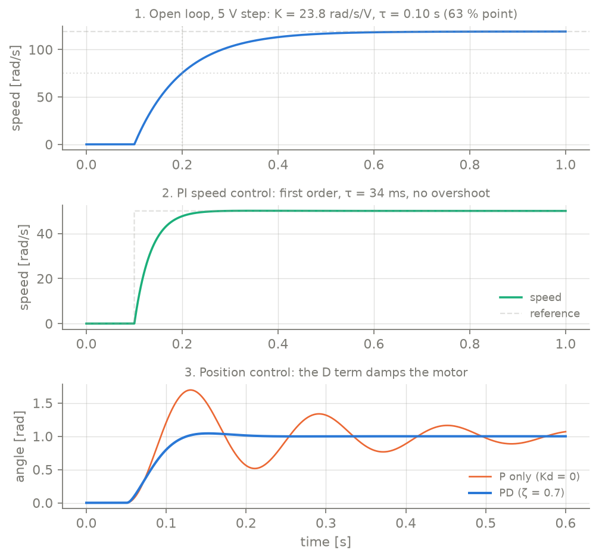

Tutorial: DC motor speed and position control¶
| You will learn | system identification from a step response, PI design by pole-zero cancellation, PD design from damping and natural frequency, a physical motor model and a 1 kHz controller |
| Before this | Position control of a mass-spring-damper |
| Level and time | intermediate, about 45 minutes |
| Follow along | start the editor (uv run nervus), File ▸ Open examples/dc_motor_speed.nervus, examples/dc_motor_position.nervus, press ▶ and double-click the scopes; the figures below come from the same model |
| Topic | Control engineering ▸ Classic lab experiments (all tutorials) |
examples/dc_motor_lab.py is the servo experiment of control lab courses: a small DC motor with an inertia
disk, a ±10 V amplifier, an encoder, and a controller running at 1 kHz. You will identify the motor from a
step response, design a PI speed controller by pole-zero cancellation, and a PD position controller
from a damping specification. The motor data are those of a typical teaching rig.
uv run python examples/dc_motor_lab.py # builds dc_motor_speed.nervus and dc_motor_position.nervus
The plant¶
The motor is built from physical blocks: the amplifier is a controlled voltage source, the DC motor block has the armature resistance \(R = 8.4\) Ω, inductance \(L = 1.16\) mH and torque constant \(k_m = 0.042\) N·m/A, and the shaft drives an inertia \(J = 2.1 \cdot 10^{-5}\) kg·m². The encoder (an angle sensor) and a speed sensor feed the 1 ms controller through Zero-Order Holds. Neglecting the small inductance, voltage to speed is a first-order system:

Step 1: identify the motor¶
Open dc_motor_speed.nervus, set closed_loop = 0 in the Model Workspace and run: the amplifier gets a 5 V
step at 0.1 s. In the scope, read the final speed (119 rad/s, so \(K = 119 / 5 = 23.8\) rad/s/V) and the time at
which the speed reaches 63 % of it: 0.1 s after the step, so \(\tau = 0.10\) s. This is how you would identify
the real rig, and the numbers match the formulas above.
Step 2: PI speed control¶
Set closed_loop = 1. A PI controller \(C(s) = K_p + K_i/s = K_p (1 + \frac{1}{T_i s})\) with \(T_i = \tau\)
cancels the motor's pole; the loop then behaves like an integrator \(K K_p / (\tau s)\), and the closed loop is
first order with the time constant \(\tau_{cl} = \tau / (K K_p)\). For \(\tau_{cl} = 33\) ms:
Run it: the speed follows the 50 rad/s step like a first-order system (63 % after 34 ms), without overshoot,
and the amplifier needs 6.1 V at most. Set Ki_w = 0 to see why the I term is there: with P alone the motor
settles at 37.2 rad/s, because the steady state needs a voltage and P only gives one when there is an error
(\(50 \cdot K K_p / (1 + K K_p)\)).
Step 3: PD position control¶
Open dc_motor_position.nervus. From voltage to angle the motor adds an integrator, \(\theta(s)/V(s) =
K / (s(\tau s + 1))\). With a PD controller \(V = K_p e + K_d \dot e\) the closed loop is
For \(\omega_n = 40\) rad/s and \(\zeta = 0.7\): \(K_p = 6.5\) V/rad and \(K_d = 0.186\) V·s/rad. The 1 rad step
overshoots by 4.3 % (the textbook value for ζ = 0.7 is 4.6 %) and is settled within 2 % after 0.14 s. The step
makes the D term kick the amplifier to its 10 V limit for a moment. Set Kd_th = 0 to see the undamped
servo: 70 % overshoot and a long ringing.
Experiments¶
| Try | What you will see |
|---|---|
speed: Kp_w = 0.5, Ki_w = 5.15 |
faster (63 % after 14 ms), but the amplifier saturates at 10 V |
speed: J = 4.2e-5 (a heavier disk) |
the cancellation no longer fits: slower (57 ms) and 8 % overshoot |
position: Kd_th = 0.05 |
too little damping: 42 % overshoot |
position: Kp_th = 20 |
faster but 25 % overshoot; the amplifier limits the acceleration |
position: J = 4.2e-5 |
17 % overshoot: a controller tuned for one load does not fit another |
Next¶
Next in this topic: Level control of coupled water tanks. Or pick another one from the tutorial overview.